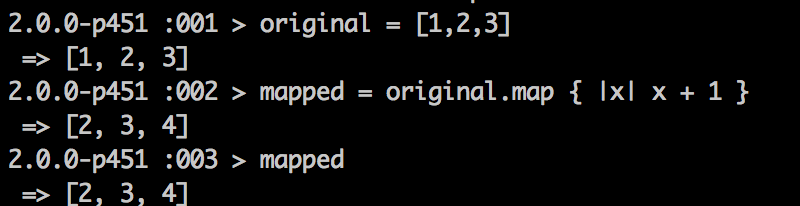
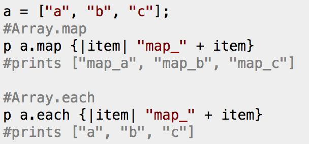

When people initially work with Ruby and Arrays, what they usually do not know is that Ruby belongs to the Enumerable module. The actual word Enumerable means "able to be counted by one-to-one correspondence with the set of all positive integers." What that means in lay man's terms is that you have a set of items that can be uniquely paired with a positive number. Thus, an array, with a finite number of items that it contains is "enumerable."
Since the Array class is part of the Enumerable module, it inherits many of the methods that are built into Enumerables. One of the more useful ones that is available is the map method.
In mathematics, a function maps an x variable to a y variable. These functions creates the graphs that we learned in junior high and high school. You remember these, right? You would have something that said y = 2x + 1. Thus, for any given 'x' value there was one y value associated with it. So for the graph y = 2x + 1, if x = 1 then y = 3 and that is the only y value associated with x = 1. Thus x = 1 maps to y = 3.
Thinking of this similarly, this means if we have an array of something each element of our array can map to something that we designate. If we have an array [1,2,3] and we want to create an array [2,3,4] we can map each of the elements to something that is one bigger than it. See how we do it below
Can you see what we have done? We took each element of the original array, added one to it, and we created the array we desired.
You may wonder how map differs from each. One solution from Stack Overflow is helpful to look at
Notice how map returns a new array that it mapped to, while each returns the original array.
It's impossible to go through every instance of when to use it, but the principle of how to use it should hopefully be clear.